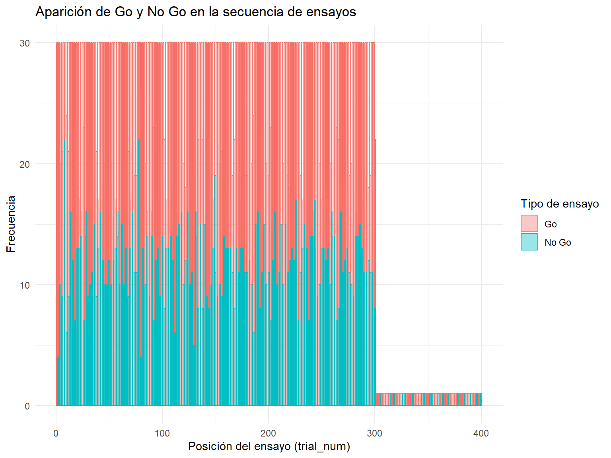
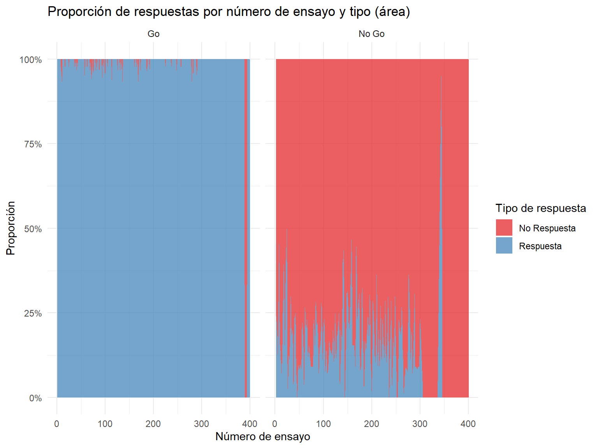

data <- data %>%group_by(SU) %>%arrange(X, .by_group =TRUE) %>%# Ordena por latencia ascendente dentro de cada sujetomutate(trial_num =row_number()) %>% ungroup %>%mutate(est_label =ifelse(est ==1, "Go", "No Go")) %>%mutate(resp_label =ifelse(resp ==-99, "No Respuesta", "Respuesta"))ggplot(data, aes(x = trial_num, fill = est_label, color = est_label)) +geom_histogram(position ="identity", alpha =0.4, bins =100) +labs(title ="Aparición de Go y No Go en la secuencia de ensayos",x ="Posición del ensayo (trial_num)",y ="Frecuencia",fill ="Tipo de ensayo",color ="Tipo de ensayo") +theme_minimal()

Código
# 1) contar y completar combinaciones que faltendata_area <- data %>%count(trial_num, est_label, resp_label) %>%# cuenta n por combinacióncomplete(trial_num, est_label, resp_label, fill =list(n=0)) %>%# mete los que falten con n=0group_by(trial_num, est_label) %>%mutate(prop = n /sum(n)) %>%# calcula proporciónungroup() %>%mutate(trial_num =as.integer(trial_num)) # fuerza tipo numérico# 2) dibujar el área apiladaggplot(data_area, aes(x = trial_num,y = prop,fill = resp_label,group = resp_label)) +# agrupa por categoríageom_area(position ="stack", alpha =0.7) +# apilado explícitofacet_wrap(~ est_label) +scale_y_continuous(labels =percent_format(accuracy =1)) +scale_fill_brewer(palette ="Set1") +labs(title ="Proporción de respuestas por número de ensayo y tipo (área)",x ="Número de ensayo",y ="Proporción",fill ="Tipo de respuesta" ) +theme_minimal()

Código
ggplot(data %>%filter(est_label =="Go"),aes(x =as.integer(trial_num), y = rt)) +stat_summary(fun = mean, geom ="line", size =0.1) +stat_summary(fun.data = mean_cl_normal,geom ="ribbon", alpha =0.2) +labs(title ="Tiempo medio de respuesta (Go) por ensayo",x ="Número de ensayo",y ="RT medio (ms)" ) +theme_minimal()